05.2 환경과 에이전트를 수식으로
마르코프 결정 과정(MDP)의 역동적인 상호작용을 수학적으로 정밀하게 다루기 위해 필요한 3대 핵심 수식을 정의합니다.
환경이 작동하는 규칙인 상태 전이 확률과 보상 함수, 그리고 에이전트의 지능과 행동 기준을 나타내는 정책(Policy)의 수학적 뼈대를 지니와 도로시의 대화를 통해 마스터해 봅시다!

| 그림 05-2-1 칠판에 적힌 상태 전이 확률 p(s’ | s, a), 보상 함수 r(s, a, s’), 정책 π(a | s)를 다정하게 설명해 주는 지니와 도로시 |
05.2.1 강화학습의 3대 수학적 기둥
MDP에서 에이전트와 환경이 주고받는 모든 상호작용은 다음의 3가지 핵심 질문에 대한 수식으로 명쾌하게 정의됩니다.
- 상태 전이 (State Transition): 상태는 에이전트의 행동에 따라 어떻게 전이되는가?
- 보상 함수 (Reward Function): 에이전트가 행동을 취했을 때 보상은 어떻게 지급되는가?
- 정책 (Policy): 에이전트는 상태를 보고 어떤 기준으로 행동을 결정하는가?
👧 도로시: “지니야! 앞선 4장 마르코프 과정에서는 그냥 상태 Pij 행렬 하나만 있었는데, MDP에서는 왜 이렇게 3개나 필요한 거야?”
🧚 지니: “마르코프 과정에서는 상태가 저절로 흘러갔지만, MDP에서는 ‘에이전트가 무슨 행동(a)을 골랐는가’에 따라 세상의 다음 상태(s’)도 달라지고 받는 보상(r)도 달라지기 때문이야! 그래서 에이전트의 선택 기준인 정책(π), 환경의 반응인 전이 확률(p), 결과로 얻는 보상(r)이라는 삼총사가 꼭 필요하단다!”
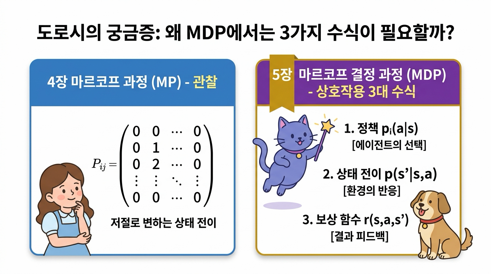
그림 05-2-2 도로시의 궁금증과 지니의 해답: 마르코프 과정(MP의 상태 행렬 Pij) vs 마르코프 결정 과정(MDP의 3대 수식: π, p, r)
05.2.2 상태 전이 (State Transition)
상태 전이state transition는 에이전트가 현재 상태 s에서 특정 행동 a를 실행했을 때 다음 상태 s’로 변화하는 물리적 또는 논리적 메커니즘을 뜻합니다.
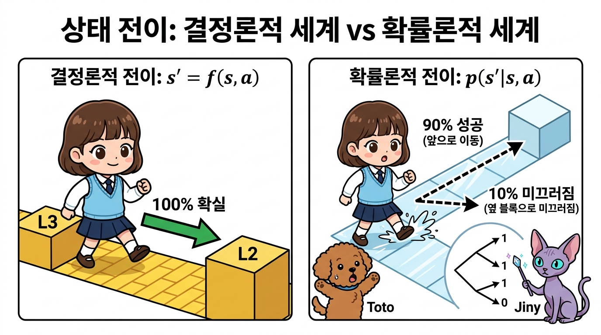
그림 05-2-3 상태 전이의 두 가지 형태: 결정적 전이 vs 확률적 전이 (환경의 마찰, 외력, 기계 오차)
05.2.2.1 결정적 상태 전이와 상태 전이 함수 f(s, a)
결정적 상태 전이(Deterministic Transition)는 현재 상태 s에서 행동 a를 취했을 때, 다음 상태 s’가 100% 확실하게 단 하나로 결정되는 경우입니다.
👧 도로시: “지니야! 내가 L3 타일에서 ‘왼쪽으로 한 칸 걷기’를 하면, 바람이나 미끄러짐 없이 무조건 L2 타일에 정확히 도착하는 세상인 거지?”
🧚 지니: “맞아 도로시야! 어떤 우연이나 오차도 없이, 상태와 행동을 넣으면 다음 상태가 자판기 버튼 누르듯 100% 하나로 튀어나오는 완벽한 함수 f(s, a)로 정의된단다!”
- f(s, a): 현재 상태 s와 에이전트의 행동 a를 입력받아 다음 상태 s’를 하나로 확정하여 출력하는 함수입니다. 이를 상태 전이 함수라고 부릅니다.
- 예: 체스나 바둑처럼 플레이어가 말을 움직이면 말이 놓이는 위치가 100% 확실하게 정해지는 완벽한 환경.
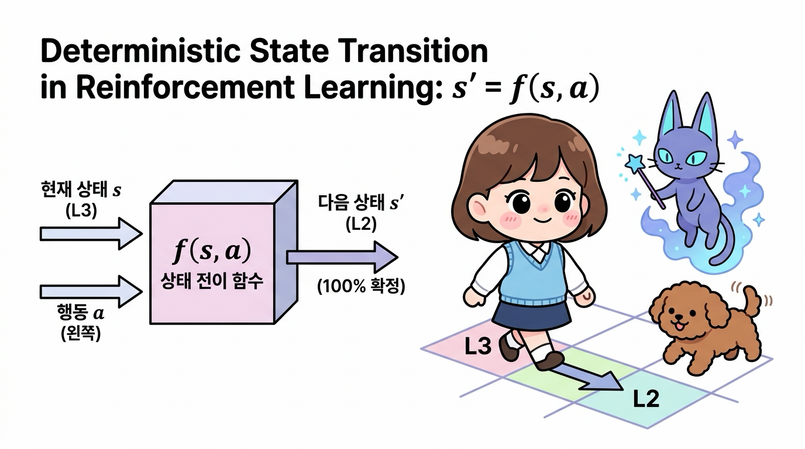
그림 05-2-4 결정적 상태 전이와 상태 전이 함수 s’ = f(s, a)의 입출력 구조 (오차 없는 100% 확정 전이)
05.2.2.2 확률적 상태 전이와 상태 전이 확률 p(s’ | s, a)
현실 세계의 로봇이나 자율주행차는 바닥의 미끄러움(마찰력 변화), 강한 돌풍(외력), 모터의 기어 유격이나 센서 노이즈(내부 오차) 때문에 의도한 대로 완벽하게 움직이지 못할 수 있습니다.
🐶 토토: “멍멍! 내가 앞으로 똑바로 달리려고 했는데, 빙판길이라 미끄러져서 옆으로 갈 수도 있다는 뜻이야?”
🧚 지니: “맞아 토토야! ‘왼쪽으로 이동’ 행동을 실행해도 90%(0.9)의 확률로만 왼쪽 칸에 안착하고, 10%(0.1)의 확률로는 얼음에 미끄러져 제자리에 머물 수 있어. 이처럼 현실의 불확실성을 담아낸 것이 바로 상태 전이 확률이란다!”
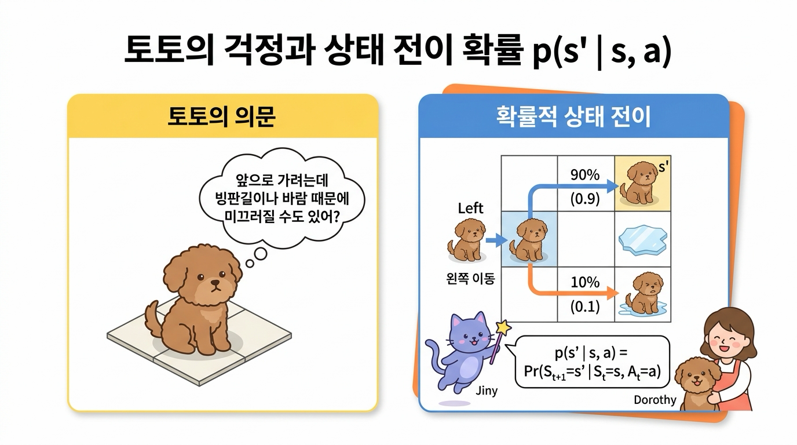
| 그림 05-2-5 토토의 걱정과 상태 전이 확률 p(s’ | s, a): 90% 정상 도달 vs 10% 미끄러짐 제자리 잔류 |
확률적 상태 전이는 다음과 같이 조건부 확률(Conditional Probability)로 나타냅니다.
- 기호
|의 오른쪽은 조건(현재 상태 s에서 행동 a를 취함)입니다. - 기호
|의 왼쪽은 그 조건하에서 다음 상태가 s’가 될 확률을 뜻합니다. - 모든 가능한 다음 상태 s’에 대해 확률을 다 더하면 항상 1이 됩니다:
Σs’ ∈ S p(s’ | s, a) = 1.0
💡 참고: 결정적 상태 전이 s’ = f(s, a)는 특정 s’에 대해 전이 확률이 1.0이고 나머지 상태는 0.0인 확률적 상태 전이의 특수한 형태로 자연스럽게 포섭됩니다.
05.2.3 MDP에서의 마르코프 성질 (Markov Property)
마르코프 결정 과정에서 가장 중요한 대전제는 “다음 상태 St+1와 보상 Rt는 오직 현재 상태 St와 현재 행동 At에 의해서만 결정되며, 과거의 모든 궤적(S0, A0, …, St-1, At-1)과는 무관하다”는 것입니다.
= Pr(St+1 = s' | St = st, At = at) = p(s' | st, at)
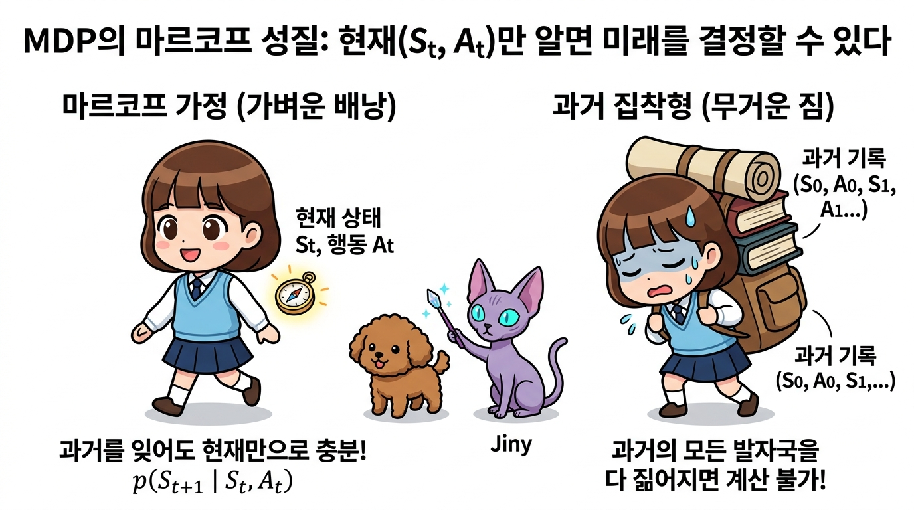
그림 05-2-6 MDP에서의 마르코프 성질: 현재 상태만으로 충분한 가벼운 의사결정 vs 무거운 과거 기록의 짐
왜 마르코프 성질이 강화학습의 축복일까요?
- 문제의 단순화 (Memoryless): 에이전트는 거대한 과거 역사책을 짊어지고 다닐 필요 없이, 현재 손에 쥔 나침반(현재 상태 St)만 보고도 항상 최적의 결정을 내릴 수 있습니다.
-
차원의 저주(Curse of Dimensionality) 극복: 과거 기록의 조합을 모두 상태로 고려하면 상태 공간이 시간 흐름에 따라 기하급수적으로 폭발하지만, 마르코프 가정을 통해 현재 상태 집합 S 만으로 문제를 유한하게 정의하고 효율적인 알고리즘(DP, Q-Learning 등)을 적용할 수 있게 됩니다.
05.2.4 보상 함수 (Reward Function)
에이전트가 상태 s에서 행동 a를 취해 다음 상태 s’에 도달했을 때 환경이 부여하는 피드백 값입니다.
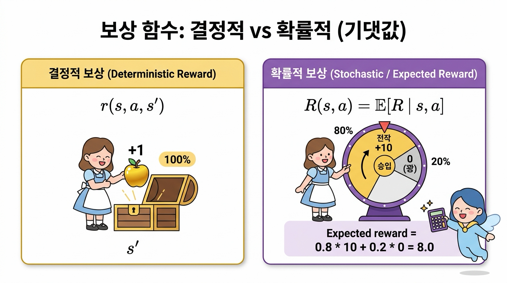
그림 05-2-7 보상 함수의 유형: 확정적으로 주어지는 결정적 보상 vs 기댓값으로 계산하는 확률적 보상
05.2.4.1 결정적 보상 함수 r(s, a, s’)
에이전트가 상태 s에서 행동 a를 하여 상태 s’로 전이되었을 때 지급받는 실수(Real Number) 보상값입니다.
👧 도로시: “지니야! L3 타일에서 왼쪽으로 이동해서 L2 타일(사과 칸)에 도착하면, 의심할 여지 없이 무조건 +1 사과를 얻는 거지?”
🧚 지니: “맞아 도로시야! 행동의 결과로 특정 상태에 도달했을 때 정해진 수치(+1 또는 -2)가 100% 확실하게 주어지는 함수를 결정적 보상 함수 r(s, a, s’)라고 한단다!”
- 예를 들어 그리드 월드에서 어떤 칸(s’)에 도착했는지만으로 사과(+1)나 폭탄(-2)이 정해진다면, 단순화하여 r(s’) 형태로 쓸 수도 있습니다.
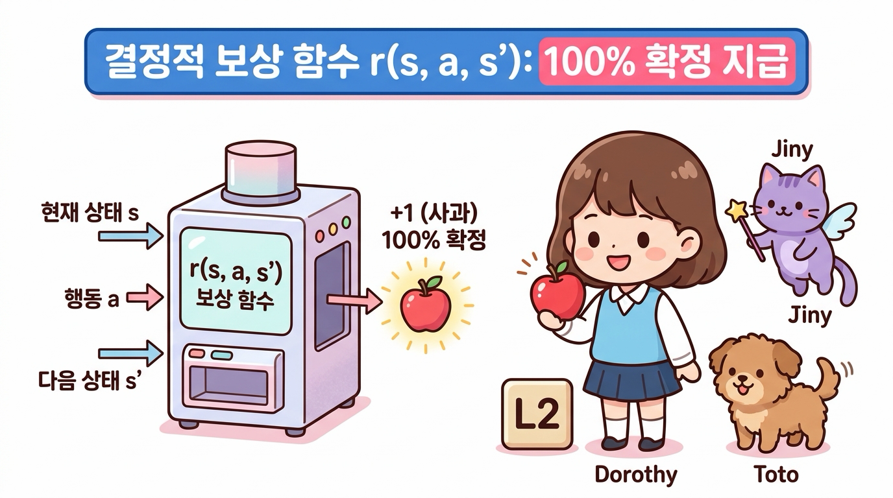
그림 05-2-8 결정적 보상 함수 r(s, a, s’): 상태와 행동, 도착 상태에 따라 100% 확정 지급되는 보상 메커니즘
05.2.4.2 확률적 보상과 보상 기댓값 함수 ℝ(s, a)
보물상자를 열었을 때 80% 확률로 황금 열쇠(+10)가 나오고 20% 확률로는 꽝(0)이 나오는 것처럼 보상이 확률적으로 주어질 수도 있습니다. 이 경우 우리는 보상의 기댓값(Expected Reward)을 계산하여 다룹니다.
🐶 토토: “멍멍! 보물상자를 열었을 때 어떤 때는 황금 열쇠(+10)가 나오고, 어떤 때는 먼지만 풀풀 날리는 꽝(0)이 나오면 보상을 몇 점이라고 해야 해?”
🧚 지니: “그럴 때는 각 결과가 나올 확률을 곱해서 더한 보상의 기댓값(Expected Reward)을 계산하면 돼! 80% 확률의 +10과 20% 확률의 0점을 합산하면 평균적으로 8.0점의 가치가 있는 상자라고 평가할 수 있단다!”
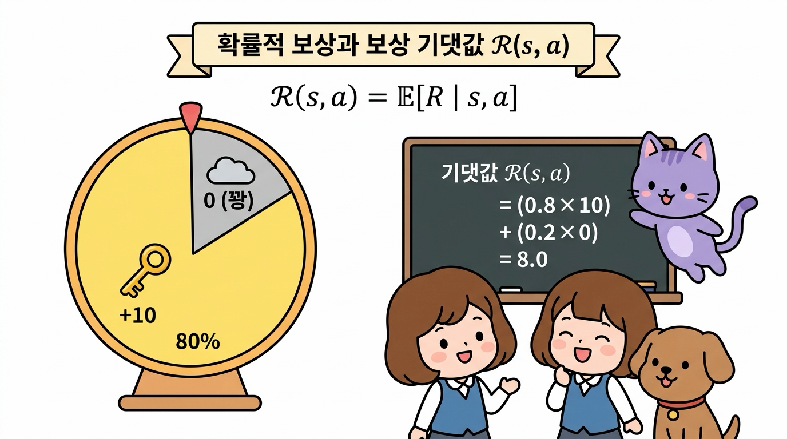
그림 05-2-9 확률적 보상과 보상 기댓값 함수 ℝ(s, a): 불확실한 보상 결과들의 가중 평균 계산 구조
이처럼 기댓값 수식을 도입하면 확률적 보상 시스템도 결정적 보상과 완전히 동일한 벨만 방정식 체계 안에서 깔끔하게 해결됩니다.
05.2.5 에이전트의 정책 (Policy)
정책(Policy)은 에이전트의 지능과 행동 양식을 결정하는 핵심 전략입니다. 즉, “어떤 상태 s에 있을 때 무슨 행동 a를 할 것인가?”를 규정하는 수학적 매핑입니다.
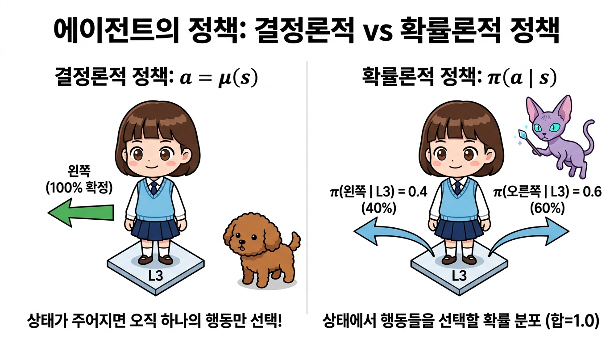
| 그림 05-2-10 에이전트의 정책 유형 비교: 100% 확정형 결정적 정책 μ(s) vs 확률 분포를 갖는 확률적 정책 π(a | s) |
05.2.5.1 결정적 정책 μ(s)
상태 s가 주어지면 에이전트가 수행할 행동 a가 단 하나로 100% 확정되는 규칙입니다.
👧 도로시: “지니야! L3 상태에 서면 망설임 없이 무조건 ‘왼쪽(Left)’으로만 가도록 정해둔 나침반 규칙이 바로 결정적 정책(μ)인 거지?”
🧚 지니: “맞아 도로시야! 어떤 상황(s)에서도 고민이나 확률 없이 단 하나의 최선의 행동(a)을 100% 확정하여 실행하는 규칙을 결정적 정책 a = μ(s)라고 부른단다!”
- μ (뮤, mu): 제어 이론에서 상태를 제어 입력으로 1:1 대응시키는 제어 함수(Controller)를 나타낼 때 전통적으로 사용하는 그리스 문자입니다.
- 예: 상태 s = L3일 때 μ(L3) = Left (무조건 왼쪽으로만 이동).
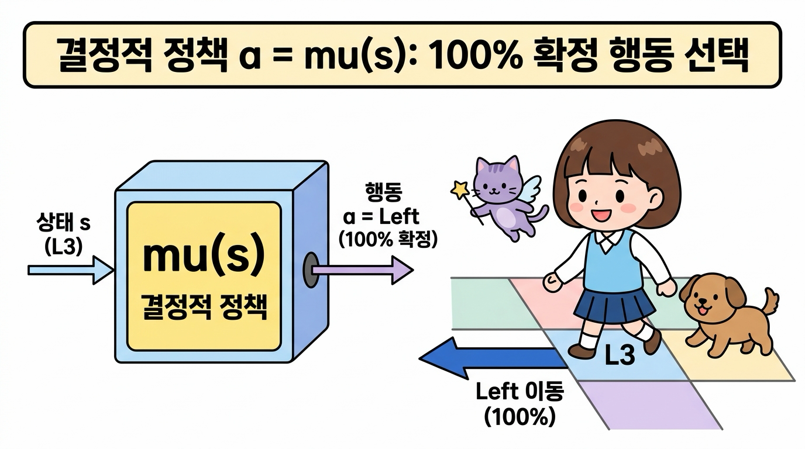
그림 05-2-11 결정적 정책 a = μ(s): 현재 상태에서 실행할 최적의 행동이 단 하나로 100% 확정되는 정책 메커니즘
05.2.5.2 확률적 정책 π(a | s)
상태 s가 주어졌을 때 여러 행동 후보들 각각을 선택할 확률 분포(Probability Distribution)를 반환하는 규칙입니다.
🐶 토토: “멍멍! 항상 똑같은 길만 가면 새로운 곳에 숨겨진 황금 보물을 못 찾을 수도 있잖아?”
🧚 지니: “맞아 토토야! 그래서 학습 초기에는 왼쪽으로 갈 확률 40%(0.4), 오른쪽으로 갈 확률 60%(0.6)처럼 확률적으로 행동을 골라 세상을 골고루 탐험(Exploration)할 수 있는 **확률적 정책 π(a s)**를 유용하게 활용한단다!”
- π (파이, pi): 정책(Policy)의 첫 글자 ‘P’에 대응되는 그리스 문자이자 확률론의 기본 기호입니다.
- 특정 상태 s에서 취할 수 있는 모든 행동 a에 대한 정책 확률의 합은 반드시 1.0입니다:
Σa ∈ A π(a | s) = 1.0 -
예: 상태 s = L3에서 π(Left L3) = 0.4, π(Right L3) = 0.6.
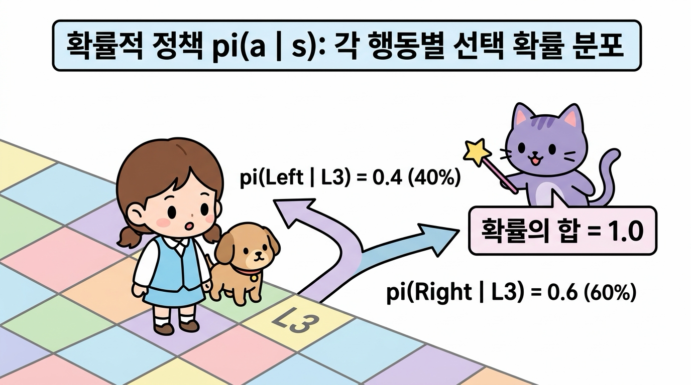
| 그림 05-2-12 확률적 정책 π(a | s): 상태 s에서 각 행동 후보를 선택할 확률 분포 구조 (확률의 총합 = 1.0) |
🧚 지니의 꿀팁: “강화학습 초기에는 에이전트가 새로운 보상을 찾기 위해 다양한 길을 탐험(Exploration)해야 하므로 확률적 정책(π)을 많이 쓰고, 학습이 완료되어 가장 완벽한 길을 찾았을 때는 흔들림 없이 최선의 선택만 내리는 결정적 정책(μ)을 주로 사용한단다!”
05.2.6 핵심 요약
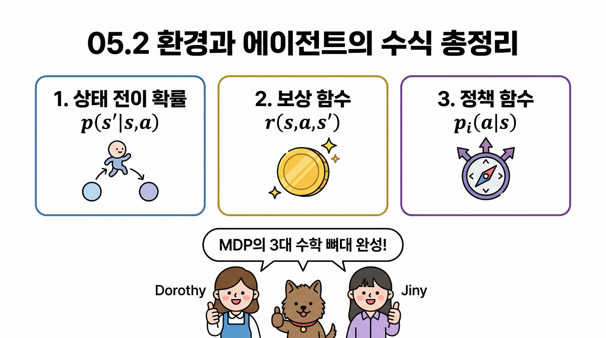
그림 05-2-13 05.2 환경과 에이전트의 수식 핵심 정리 인포그래픽
-
**상태 전이 확률 p(s’ s, a)**: 현재 상태 s에서 행동 a를 수행했을 때 다음 상태 s’로 도달할 확률 분포입니다. - 마르코프 성질(Markov Property): 과거의 기록에 의존하지 않고 오직 현재의 (s, a)만으로 미래의 상태 s’와 보상 r이 결정되는 성질입니다.
- 보상 함수 r(s, a, s’): 행동과 전이의 결과로 환경이 에이전트에게 지급하는 평가 신호입니다.
-
**정책 π(a s) / μ(s)**: 상태 s에서 에이전트가 어떤 행동을 선택할지 결정하는 의사결정 알고리즘입니다.
다음 05.3절에서는 이 수식들을 바탕으로 에이전트가 달성해야 할 궁극적인 목적지인 ‘MDP의 목표와 가치 함수(Value Function)’를 정복해 보겠습니다!